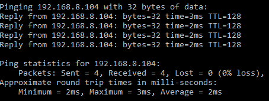

Schon wieder ein Port-Forwarding-Problem Thread [Internet Flex Box B529s-23a]
mysteriouscapitalist
Hallo, trotz ausführlichem Durchschauen ähnlicher Threads zum Thema habe ich es leider nicht geschafft das Problem selbstständig zu lösen, weshalb ich ein neues Topic für meine spezifische Problematik aufmachen muss. Ich bitte im Voraus um Verständnis
Ich versuche momentan einen privaten Server für ein Spiel einzurichten, welches den Port 22023 freigeschaltet braucht - gerade an der Port-Weiterleitung scheitert das Vorhaben: zwar zeigen die Router-Einstellungen meiner Internet Flex Box [Huawei B529s-23a] an, dass die Weiterleitung sowohl über UDP als auch TCP eingeschaltet ist, aber laut
https://www.yougetsignal.com/
ist der Port weiterhin nicht zugänglich. (Ich teste von meinem LTE-vernetztem Handy.)
Die Profiländerung auf Business APN hat mir zwar zur fixen IP-Adresse verholfen (entspricht 78.***.***.**.***; habs in den Router-Einstellungen kontrolliert), brachte aber sonst keine Wirkung. Neustart / Strom ausstecken von Router und Computer führte ebenfalls zu keiner Änderung.
Muss vielleicht einfach drüber schlafen, wäre aber echt dankbar, wenn mir jemand weiterhelfen könnte.
MarioM
Hello,
kannst du vielleicht mal deine Settings der Portweiterleitung hier posten?
Ich nehme an du hast nur die Flex Box und dahiner nichts, richtig?
Liebe Grüße
Mario
mysteriouscapitalist
Gerade eben schrieb MarioM:
Hello,
kannst du vielleicht mal deine Settings der Portweiterleitung hier posten?
Ich nehme an du hast nur die Flex Box und dahiner nichts, richtig?
Liebe Grüße
Mario
Hallo, vielen Dank für die Antwort; anbei die Daten
Richtig, betreibe ausschließlich die Flex Box.
MarioM
Hmm, sieht soweit mal gut aus - der Server läuft auch dahinter schon? Bevor nämlich da nichts läuft wird der Port auch nicht offen sein.
Also ich nehme an im internen Netzwerk kommst du ohne Probleme hin?
mysteriouscapitalist
vor 9 Minuten schrieb MarioM:
Hmm, sieht soweit mal gut aus - der Server läuft auch dahinter schon? Bevor nämlich da nichts läuft wird der Port auch nicht offen sein.
Also ich nehme an im internen Netzwerk kommst du ohne Probleme hin?
Der Server läuft, intern kann ich mich auch nicht verbinden - kriege einen "connection timed out"-artigen Fehler
edit:/ am Firewall liegts nicht, die entsprechenden Ausnahmen sind eingestellt; deaktivieren hilft auch nicht
Bearbeitet
von mysteriouscapitalist
MarioM
Gut, wenn du dich intern nicht verbinden kannst, dann kann es auch von außen nicht klappen
...
Eventuell Firewall, Virenschutz prüfen? Ob da was blockiert wird?
mysteriouscapitalist
vor 1 Minute schrieb MarioM:
Gut, wenn du dich intern nicht verbinden kannst, dann kann es auch von außen nicht klappen
...
Eventuell Firewall, Virenschutz prüfen? Ob da was blockiert wird?
eben editiert, keine Änderung
MarioM
Okay, welche Betriebssystem hast du im Einsatz? Also von wo willst du auf welchen PC?
Ich nehme an du probierst es eh über die interne IP Adresse und nicht die öffentliche?
mysteriouscapitalist
Der Server läuft auf einem Laptop mit Windows 10.
Auf meinem Stand-PC, ebenfalls mit Win10 ausgestattet, läuft das Spiel.
Beide sind mit einem WLan Netzwerk verbunden.
Weder über die öffentliche noch über die interne IP Adresse lässt sich eine Verbindung erzielen.
MarioM
Gut, über die öffentlich vom internen Netzwerk wirst du nicht hinkommen, außer du hast spezielle Hardware stehen oder irgendwo noch ein Service laufen.
Anyway, wenn du auch über die interne IP Adresse nicht hinkommst, musst du mal schauen warum das so ist. Davor macht es keinen Sinn sich über die Portweiterleitung zu unterhalten
Kannst du die Rechner pingen? Kannst du mal intern einen Portcheck machen?
mysteriouscapitalist
vor 1 Minute schrieb MarioM:
Kannst du die Rechner pingen? Kannst du mal intern einen Portcheck machen?
Wichtig dabei ist, dass der Rechner auf dem der Server läuft erreichbar ist, also das der Ping etwas zurückliefert.
Und beim PortScan sollte dann dein bekanntgegebener Port offen sein.
Ich hoffe das hilft dir ein wenig - wir kommen der Sache schon näher
mysteriouscapitalist

Hiermal das Ergebnis vom Ping Test (von Stand-PC [Client] ad Laptop [Server])
Portscanner läuft
MarioM
Okay und ich nehme an in die andere Richtung gehts auch?
also Laptop => StandPC?
mysteriouscapitalist
vor 1 Minute schrieb MarioM:
Okay und ich nehme an in die andere Richtung gehts auch?
also Laptop => StandPC?
Jap, selbes Ergebnis
Glaube nicht, dass es einen Unterschied macht, aber ich sage es sicherheitshalber dazu -> der Stand-PC ist direkt mit dem LTE Router via Ethernet verbunden.
MarioM
Nein das sollte normal egal sein, du kannst ihn ja pingen und damit ist er erreichbar
Sieht eher danach aus als hätte der Server der dort läuft ein Problem.
Was genau ist denn das für ein Server/Spiel wenn ich nachfragen darf?
Kannst du dich hinverbinden, wenn du am PC bist auf dem der Server läuft?
mysteriouscapitalist
Nein, Docker habe ich nicht verwendet.
Ich habe gestern versucht am Stand-PC sowohl den Server als auch den Spiel-Client laufen zu lassen (zumal weder das eine noch das andere besonders Ressourcen-intensiv sind), hatte aber auch damit kein Erfolg.
MarioM
Kannst du das nochmal probieren, aber nicht 127.0.0.1 eintragen sondern die IP Adresse des PCs auf dem der Server laufen soll?
Würde mich interessieren ob es einen Unterschied macht.
mysteriouscapitalist
Was soll ich versuchen - am Server PC sowohl das Spiel als auch den Server laufen zu lassen? Habe deinen Vorschlag nicht ganz verstanden
edit:/ habs versucht, kein Unterschied
Bearbeitet
von mysteriouscapitalist
MarioM
Ja genau beides am selben PC laufen zu lassen.
Ich nehme an du hattest bei allen Versuchen die Firewall, den Virenschutz abgedreht?
29 minutes ago, mysteriouscapitalist said:
edit:/ habs versucht, kein Unterschied
Meinst du damit, dass du beim Starten statt 127.0.0.1 deine IP vom PC auf dem der Server läuft eingegeben hast?
Bearbeitet
von MarioM
mysteriouscapitalist
Okay, habe jetzt, glaube ich, verstanden, was du gemeint hast und habe es geschafft mich lokal mit dem Server zu verbinden - habe die Server Public IP auf die lokale Adresse (192.168.*.*) geändert, konnte sowohl vom Laptop [Server] als auch vom Stand PC [Client] eine Verbindung herstellen.
Mein Problem ist jedoch, dass ich über die öffentliche IP nicht in den Server reinkomme,
wie in diesem Video demonstriert wird
. Ab dem Timestamp ändert der Videoposter die Public IP von der lokalen auf seine öffentliche, fixe IP und kann sich dann im Laufe des Videos über den Port zum Server verbinden.
Bearbeitet
von mysteriouscapitalist
MarioM
Okay, kannst du als nächsten Schritt einfach mal 127.0.0.1 auf die IP Adresse ändern auf dem der Server läuft? Wird vermutlich eine 192.168 ... IP Adresse sein.
Und dann solltest du über das interne Netzwerk genau auf diese 192.168 verbinden können ...
mysteriouscapitalist
Entschuldige, ich habe mich verschrieben gehabt - konnte die Verbindung mittels 192.168-artigen Adressen aufbauen
Zwischenzeitlich sind die Ergebnisse vom Port Scanner da: oben - Stand PC [Client], unten - Laptor [Server]
Weder auf dem einen, noch auf dem anderen ist der Port 22023 offen, trotz der, meines Erachtens, richtigen Einstellungen
MarioM
Die Einstellungen sollten passen, da gebe ich dir Recht: Du kannst ja als IP Adresse beim Server die 192.168 sowieso lassen.
Die Portweiterleitung sollten ja trotzdem funktionieren, weil du dann über die öffentlich IP Adresse auf den Server zugreifen kannst und das schlägt am Modem auf und der leitet den Port dann auf deine lokale IP Adresse weiter, so wie angegeben.
Hast du das Szenario eh auch getestet, oder?
mysteriouscapitalist
Hallo, trotz ausführlichem Durchschauen ähnlicher Threads zum Thema habe ich es leider nicht geschafft das Problem selbstständig zu lösen, weshalb ich ein neues Topic für meine spezifische Problematik aufmachen muss. Ich bitte im Voraus um Verständnis
Ich versuche momentan einen privaten Server für ein Spiel einzurichten, welches den Port 22023 freigeschaltet braucht - gerade an der Port-Weiterleitung scheitert das Vorhaben: zwar zeigen die Router-Einstellungen meiner Internet Flex Box [Huawei B529s-23a] an, dass die Weiterleitung sowohl über UDP als auch TCP eingeschaltet ist, aber laut
https://www.yougetsignal.com/
ist der Port weiterhin nicht zugänglich. (Ich teste von meinem LTE-vernetztem Handy.)
Die Profiländerung auf Business APN hat mir zwar zur fixen IP-Adresse verholfen (entspricht 78.***.***.**.***; habs in den Router-Einstellungen kontrolliert), brachte aber sonst keine Wirkung. Neustart / Strom ausstecken von Router und Computer führte ebenfalls zu keiner Änderung.
Muss vielleicht einfach drüber schlafen, wäre aber echt dankbar, wenn mir jemand weiterhelfen könnte.
mysteriouscapitalist
Wie gesagt, über die lokale IP kann ich mich verbinden, über die fixe öffentliche gehts nicht
MarioM
Schon klar, aber was ich meinte, wenn du den Server startest, belässt du die IP Adresse eh bei der lokalen oder?
mysteriouscapitalist
Nein, das habe ich bis jetzt noch nicht versucht - die Public IP des Servers muss
gemäß der Video Anleitung
auf die öffentliche IP umgestellt werden. Ich kann aber auch die Variante probieren und eine Rückmeldung geben.
edit:/ es funktioniert nicht
Bearbeitet
von mysteriouscapitalist
NTM
Für die öffentliche IP Tests hast du Laptop mit Server an der Flex Box hängen über LTE und den Desktop mit dem Game Client am Handy-Hotspot über LTE.
Außerdem ist die öffentliche IP mit dem Business APN nicht fix, sondern dynamisch (kann sich also ändern).
Den APN hast du eh mit Nutzername (t-mobile) und Passwort (tm) eingetragen? Weil sonst hat man öffentliche IP, die nicht wirklich öffentlich ist.
MarioM
3 minutes ago, NTM said:
Den APN hast du eh mit Nutzername (t-mobile) und Passwort (tm) eingetragen? Weil sonst hat man öffentliche IP, die nicht wirklich öffentlich ist.
Ja wurde schon mal beschrieben weiter oben ...
MarioM
4 minutes ago, NTM said:
Für die öffentliche IP Tests hast du Laptop mit Server an der Flex Box hängen über LTE und den Desktop mit dem Game Client am Handy-Hotspot über LTE.
Das ist richtig,
@mysteriouscapitalist
wie hast du denn getestet.
Hat sich ein anderer Freund versucht zu verbinden?
Aus dem internen Netzwerk geht das nämlich nicht über die öffentliche IP
mysteriouscapitalist
Gerade eben schrieb MarioM:
Das ist richtig,
@mysteriouscapitalist
wie hast du denn getestet.
Hat sich ein anderer Freund versucht zu verbinden?
Aus dem internen Netzwerk geht das nämlich nicht über die öffentliche IP
In der
bereits mehrfach geposteten Video-Anleitung
wird demonstriert, wie der User sowohl den Server als auch das Spiel am selben PC startet und sich damit über die öffentliche IP verbinden lässt. Ich habe zumindest ein Use-Case, welches zeigt, dass dies möglich ist.
Laptop [Server] und Stand PC [Client] sind mit dem selben LTE Router verbunden.
@NTM ja, Business APN ist richtig eingerichtet.
MarioM
1 minute ago, mysteriouscapitalist said:
IP verbinden lässt. Ich habe zumindest ein Use-Case, welches zeigt, dass dies möglich ist.
Das schon, aber mit dem Modem das du hast geht das nicht - er kann die öffentlich IP hier nicht auflösen, dafür brauchst du spezielle Hardware.
Daher auch der Ansatz, dass du mit deinem Laptop via Hotspot verbindest und dann versucht via der öffentlichen IP auf den Server zuzugreifen
Oder du lässt es einen Freund versuchen.
NTM
vor 1 Minute schrieb mysteriouscapitalist:
In der
bereits mehrfach geposteten Video-Anleitung
wird demonstriert, wie der User sowohl den Server als auch das Spiel am selben PC startet und sich damit über die öffentliche IP verbinden lässt. Ich habe zumindest ein Use-Case, welches zeigt, dass dies möglich ist.
Laptop [Server] und Stand PC [Client] sind mit dem selben LTE Router verbunden.
Das funktioniert aber nicht mit jedem Router. Viele Router welche von dem Anbieten ausgegeben werden können dies nicht.
Deswegen eine Portweiterleitung immer wirklich von außen testen.
mysteriouscapitalist
Aha, ist das also durch die Hardware Limitationen bedingt. Sprich, ich kann nur hosten oder spielen von meiner IP aus, beides gleichzeitig geht nicht?
Bearbeitet
von mysteriouscapitalist
MarioM
4 minutes ago, mysteriouscapitalist said:
Aha, ist das also durch die Hardware Limitationen bedingt. Sprich, ich kann nur hosten oder spielen von meiner IP aus, beides gleichzeitig geht nicht?
Du kannst beides machen, nur zugreifen intern über die interne IP und zugreifen von extern über die public IP
MarioM
Hat es nun funktioniert?
mysteriouscapitalist
vor 7 Minuten schrieb MarioM:
Du kannst beides machen, nur zugreifen intern über die interne IP und zugreifen von extern über die public IP
Habs eben über die interne IP probiert, hat funktioniert - trotz der Tatsache, dass beim Server die Public IP eingestellt ist. Jetzt nur mehr richtig von außen testen - scheint nahe an der Lösung dran zu sein, auf jeden Fall vielen Dank für die Hilfe
MarioM
Naja der Server wird grundsätzlich einfach auf allen Interfaces hören
Daher wird das gehen - halte uns am Laufenden, bin gespannt ob du es dann geschafft hast
mysteriouscapitalist
vor 10 Minuten schrieb MarioM:
Naja der Server wird grundsätzlich einfach auf allen Interfaces hören
Daher wird das gehen - halte uns am Laufenden, bin gespannt ob du es dann geschafft hast
habs jetzt via der LTE Verbindung von meinem Handy eingerichtet, funktioniert einwandfrei
möchte es jetzt nur noch mit Freunden testen plus mich über die interne Adresse "dazuverbinden", dann kann man die Sache als "gelöst" betrachten
Nochmal vielen Dank an Euch beide für die Hilfe!
MarioM
Perfekt
Gerne und freut mich, dass es nun funktioniert

{kind=link}